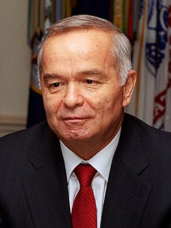

|
Islom Abdugʻaniyevich Karimov (1938-yil 30-yanvar, Samarqand shahri — 2016-yil 2-sentyabr, Toshkent shahri[2]) — davlat va siyosat arbobi, Oʻzbekiston Respublikasining birinchi prezidenti. Oʻzbekiston Qahramoni (1994). Oʻzbekiston Qurolli Kuchlari Oliy Bosh Qoʻmondoni va 2007-yilgi prezidentlik saylovlari gʻolibi, 2015-yilgi prezidentlik saylovlari gʻolibi. Oʻzbekiston mustaqilligi eʼlon qilingunga qadar OʻzSSR kommunistik partiyasi birinchi kotibi. 1991-yildan umrining oxiriga qadar Oʻzbekiston Prezidenti. Islom Karimov boshchiligida Oʻzbekiston oʻzining Konstitutsiyasiga ega boʻldi, BMTda tan olindi va MDH davlatlari bilan teng huquqli aloqalarni olib borgan.
Hayoti va faoliyati
Islom Karimov xizmatchi oilasida tugʻilgan. Oʻrta Osiyo politexnika instituti (1960), Toshkent xalq xoʻjaligi institutini (1967) tugatgan.
Mehnat faoliyati
Mehnat faoliyatini 1960-yilda Toshkent qishloq xoʻjaligi mashinasozligi („Tashselmash“) zavodida master yordamchiligidan boshladi. Soʻng mazkur korxonada master, texnolog. 1961-yildan 1966-yilgacha V. P. Chkalov nomidagi Toshkent aviatsiya ishlab chiqarish birlashmasida muhandis, yetakchi muhandis-konstruktor boʻlib ishladi. 1966-yilda Oʻzbekiston Davlat plan komitetiga ishga oʻtib, bosh mutaxassislikdan respublika Davlat plan komiteti raisining birinchi oʻrinbosarigacha boʻlgan yoʻlni bosib oʻtdi. 1983-yildan Oʻzbekiston SSR Moliya vaziri, 1986-yildan Oʻzbekiston SSR Ministrlar Soveti raisining oʻrinbosari — respublika Davlat plan komitetining raisi. 1986—1989-yillarda Oʻzbekiston KP Qashqadaryo viloyat komitetining birinchi kotibi, 1989-yil iyunidan Oʻzbekiston KP MK birinchi kotibi. 1990-yil 24-martda Oʻzbekiston SSR Oliy Kengashining sessiyasida Islom Karimov Oʻzbekiston SSR Prezidenti etib saylandi.
Siyosiy faoliyati
1991-yil 31-avgustda Karimov tarixiy voqea — Oʻzbekiston Respublikasining davlat mustaqilligini eʼlon qildi. 1991-yil 29-dekabrda muqobillik asosida oʻtkazilgan umumxalq saylovida Karimov Oʻzbekiston Respublikasi Prezidenti etib saylandi. 1995-yil 26-martda boʻlib oʻtgan umumxalq referendumi yakunlariga koʻra, Karimovning Prezidentlik vakolati 2000-yilga qadar uzaytirildi. 2000-yil 9-yanvarda u muqobillik asosida Oʻzbekiston Respublikasining Prezidenti etib qayta saylandi. Oʻzbekiston Respublikasi Konstitutsiyasining 89- va 93-moddalariga muvofiq, Karimov ayni vaqtda, Oʻzbekiston Respublikasi Vazirlar Mahkamasining Raisi (1990—1992), Oʻzbekiston Respublikasi Qurolli Kuchlarining Oliy Bosh qoʻmondonidir.
Ilmiy faoliyati
Karimov Oʻzbekiston Fanlar Akademiyasi (1994), shuningdek, iqtisod, fan, taʼlimni rivojlantirishga qoʻshgan ulkan hissasi uchun oʻndan ortiq xorijiy mamlakat universitet va akademiyalarining faxriy fan doktori, professor hamda akademikligiga saylangan. Uning
- „Oʻzbekistonning oʻz istiqlol va taraqqiyot yoʻli“ (1992),
- „Yangi uy qurmay turib, eskisini buzmang“ (1993)
- „Oʻzbekiston — bozor munosabatlariga oʻtishning oʻziga xos yoʻli“ (1993)
- „Bizdan ozod va obod Vatan qolsin“ (1994)
- „Istiqlol va maʼnaviyat“ (1994)
- „Vatan sajdagoh kabi muqaddasdir“ (1995)
- „Oʻzbekiston XXI asr boʻsagʻasida: xavfsizlikka tahdid, barqarorlik shartlari va taraqqiyot kafolatlari“ (1997)
- „Barkamol avlod orzusi“ (1998)
- „Kuchli davlatdan kuchli jamiyat sari“ (1998)
- „Tarixiy xotirasiz kelajak yoʻq“ (1998)/li>
- „Olloh qalbimizda, yuragimizda“ (1999)
- „Ozod va obod vatan, erkin va farovon hayot — pirovard maqsadimiz“ (2000)
- „Tinchlik uchun kurashmoq kerak“ (2001)
- „Oʻzbekistonda demokratik oʻzgarishlarni yanada chuqurlashtirish va fuqarolik jamiyati asoslarini shakllantirishning asosiy yoʻnalishlari“ (2002)
- Yuksak ma'naviyat–yengilmas kuch (2008)
va boshqa asarlarida iqtisodiyot, ijtimoiy-siyosiy taraqqiyotning dolzarb masalalari tadqiq qilingan, Oʻzbekistonning ichki va tashqi siyosati ilmiy asoslab berilgan, hozirgi va istiqboldagi vazifalar koʻrsatib oʻtilgan. Uning asarlari ingliz, rus, fransuz, ispan, nemis, hind, xitoy, arab, koreys, turk va boshqa xorijiy tillarga tarjima qilinib, bir necha bor nashr etilgan.
|
Islom Abdugʻaniyevich Karimov

Oʻzbekiston Prezidenti
Mansab davri
1991-yil 29-dekabr — 2016-yil 2-sentyabrgacha
Hukumat
boshlig'i
|
Shukrullo Mirsaidov
Abdulhoshim Mutalov
Oʻtkir Sultonov
Shavkat Mirziyoyev
|
O'tmishdoshi
|
lavozim taʻsis etilgan; uning oʻzi OʻzSSR Prezidenti sifatida |
Vorisi
|
Nigʻmatilla Yoʻldoshev (muvaqqat prezident)
Shavkat Mirziyoyev (muvaqqat prezident)
Shavkat Mirziyoyev |
OʻzSSR KP MQ birinchi kotibi
Mansab davri
1989-yil 23-iyun — 1991-yil 14-sentyabrgacha
| O'tmishdoshi |
Rafiq Nishonov |
Vorisi
| lavozim tugatilgan |
|
Shaxsiy ma'lumotlar
tavalludi
|
30-yanvar 1938-yil Samarqand, Oʻzbekiston SSR |
vafoti
|
2-sentyabr 2016-yil
(78 yoshda)
Toshkent, Oʻzbekiston Respublikasi |
| siyosiy partiyasi |
Oʻzbekiston Liberal-Demokratik Partiyasi |
| turmush o'rtog'i |
Natalya Kuchma (1965-1970)
Tatyana Karimova (1971-yildan) |
bolalari
|
oʻgʻli: Pyotr (1966) qizlari: :Gulnora Karimova (1972)
Lola Karimova-Tillayeva (1978) |
| onasi |
Sanobar Karimova |
| otasi |
Abdugʻani Karimov |
|